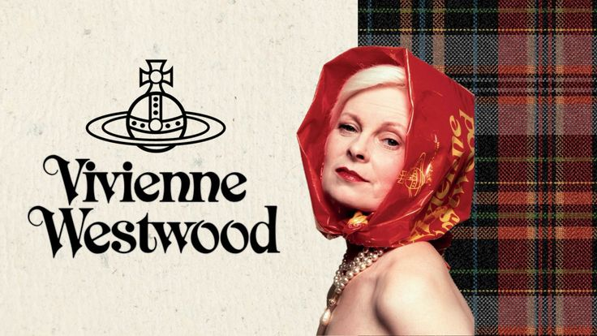
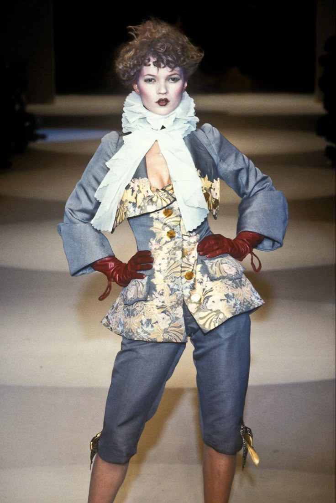
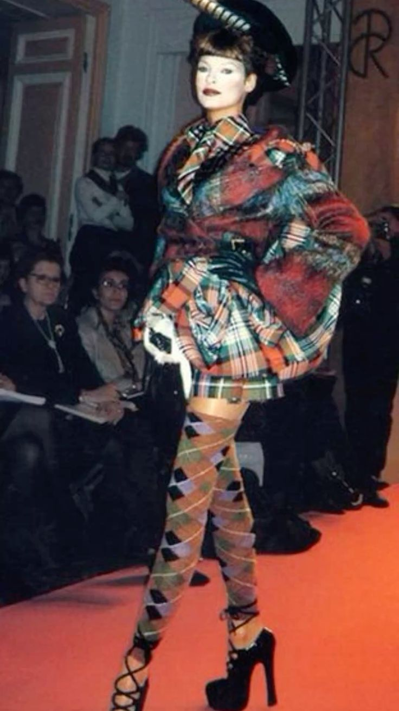
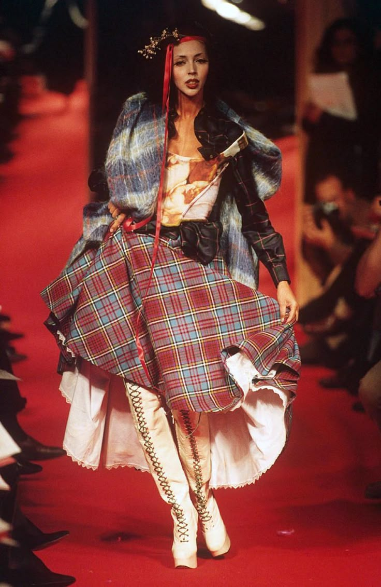
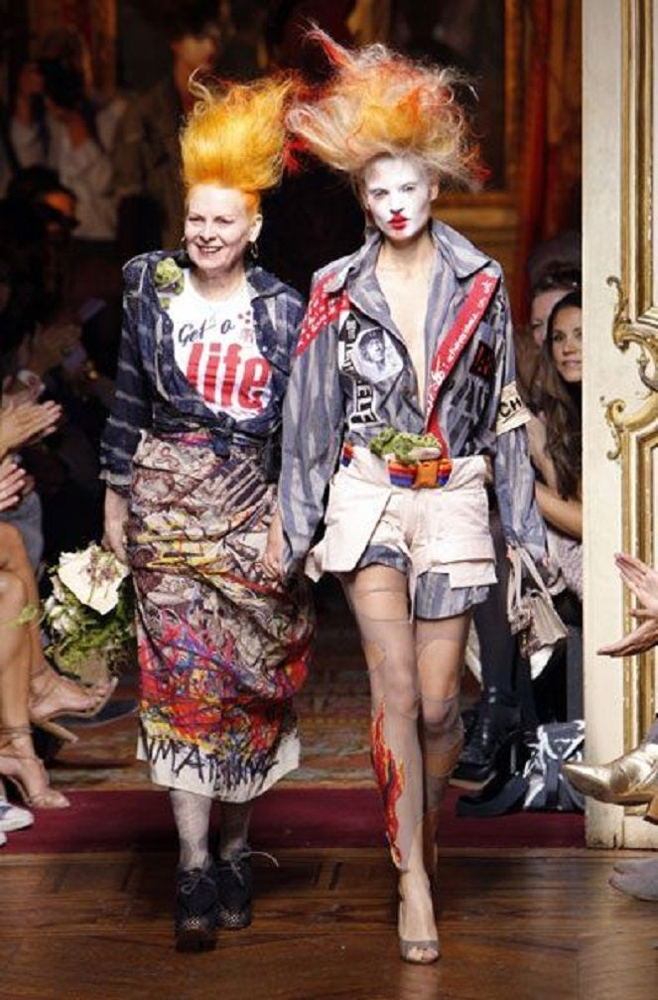
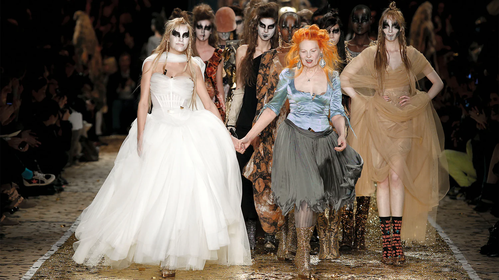

VIVIENNE WESTWOOD
¿QUIÉN ERA VIVIENNE WESTWOOD?
Vivienne Westwood fue una influyente diseñadora de moda británica, conocida por ser una de las figuras más destacadas en la historia de la moda contemporánea y la principal responsable de la estética punk.
Westwood fue fundamental en el desarrollo de la moda punk en la década de 1970. Junto a su pareja Malcolm McLaren, abrió la tienda "SEX" en Londres, que se convirtió en un centro de la cultura punk. Sus diseños desafiaban las convenciones y utilizaban elementos como la ropa rota, los corsés y los estampados provocativos, lo que la llevó a ser considerada una pionera del estilo punk.

Además de su trabajo en la moda, Westwood fue una ferviente defensora de varias causas sociales y ambientales. Utilizó su plataforma para abogar por el cambio climático, los derechos humanos y la sostenibilidad en la industria de la moda. Su enfoque no solo se centró en el diseño, sino también en la responsabilidad social de la moda.
 |
 |
 |
|  |
|  |
|  |
|
Vivienne Westwood FALL WINTER 1994 PARIS
¿CUÁNTAS VECES HAS COMPRADO UNA PRENDA PENSADO QUE LA UTILIZARÍAS POR LOS PRÓXIMOS 10 AÑOS?
Esa es la mentalidad Westwood: la prenda como una inversión de identidad, no como un capricho de temporada. La moda debe ser divertida, pero también debe tener un mensaje. En un mundo que a veces nos empuja a encajar, Vivienne nos invita a destacar. Su uso de las plataformas imposibles, el maquillaje teatral y las mezclas de estampados imposibles son un recordatorio de que la vida es demasiado corta para vestir ropa aburrida. Además, su lucha contra el cambio climático se reflejaba en su uso de materiales y en su mensaje de calidad sobre cantidad, este mensaje resuena más fuerte que nunca en este 2026.
La costura no es para llenar el armario; es para crear piezas que nos acompañen toda la vida.
TRAYECTORIA
Las colaboraciones de Vivienne Westwood son tan legendarias como sus líneas de moda. Desde su trabajo con marcas como Melissa hasta sus diversas aventuras artísticas, ha demostrado consistentemente que la creatividad no conoce límites. Además, su influencia va más allá de la moda: su estética puede verse en la música, el arte e incluso el activismo. Artistas, músicos y figuras públicas han lucido sus creaciones, amplificando su voz y visión, asegurando su lugar como una fuerza impulsora en la cultura popular.
A medida que ha avanzado en sus años, el legado de Westwood sigue siendo vital. Su hijo, Joseph Corré, y su equipo mantienen viva su visión a través de la marca, enfocándose en preservar el espíritu que ella estableció. Ha trazado un camino para futuros diseñadores, inculcando un espíritu de rebeldía y una pasión por la conciencia social. El movimiento punk pudo haber nacido en los años setenta, pero su esencia, encarnada por Westwood, continúa inspirando y provocando reflexión en la moda actual.

CLICK SOBRE ESTA IMAGEN PARA MÁS INFORMACIÓN SOBRE JOSEPH CORRÉ
CAMBIO MEDIOAMBIENTAL
TERCERA PÁGINA